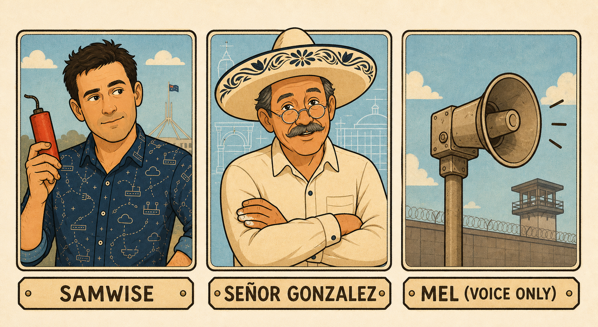
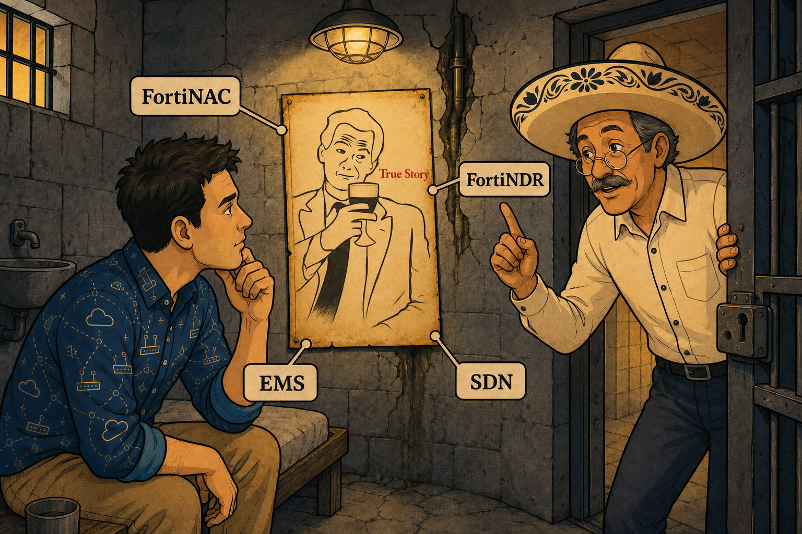
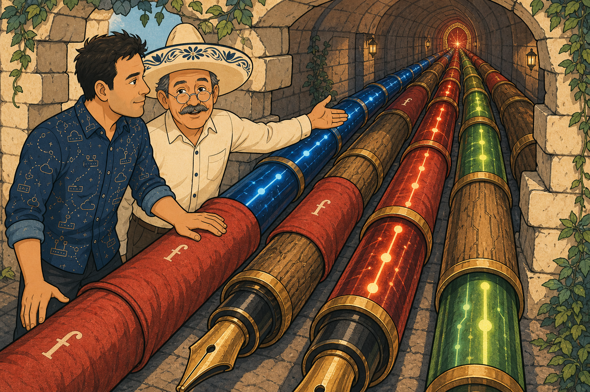
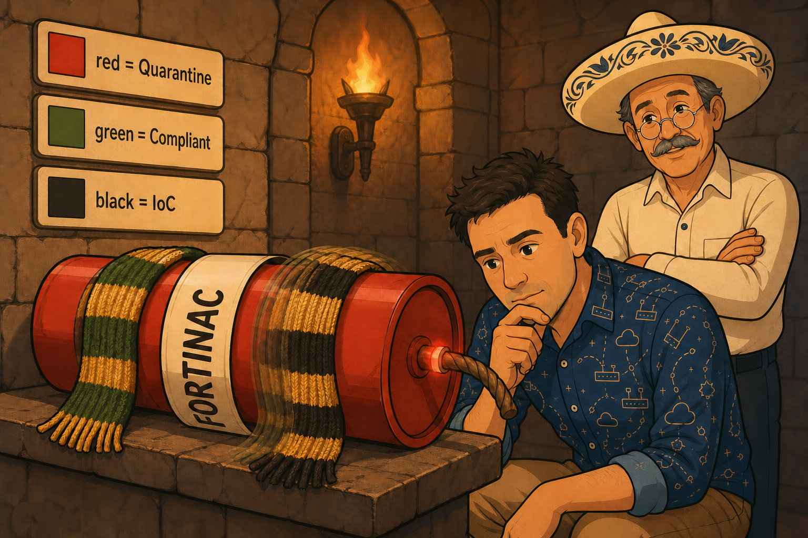
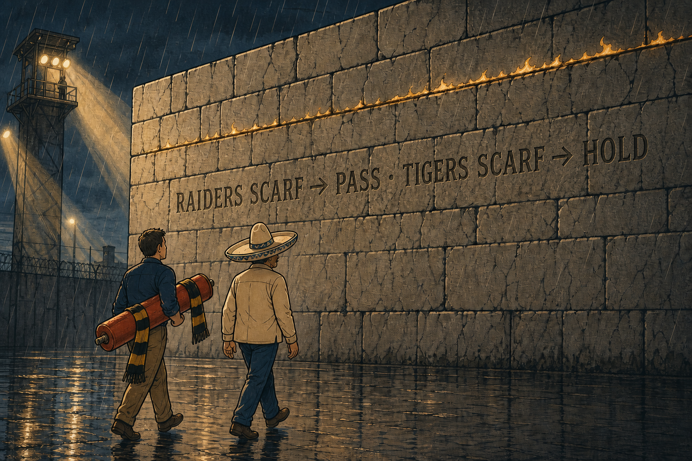
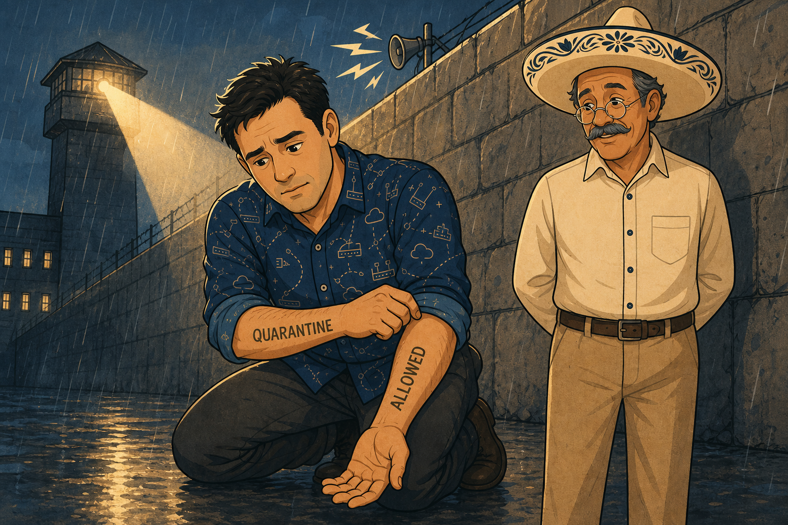

The Poster
In which something knows everything and can do nothing.

Every automation chain begins with a system that simply knows. FortiNAC knows a device failed its posture check. EMS knows an endpoint’s compliance state and tags. FortiNDR knows it detected an indicator of compromise. The SDN platform — AWS, Azure, NSX, Kubernetes — knows an instance’s metadata.
None of them can enforce a single packet’s fate. That is the defining property of the poster: knowing, not enforcing. And mind the classic mix-up — the SDN connector is not a source of truth. The platform is. The connector is the next stop.
The source of truth is the authoritative origin of a fact with no enforcement power of its own. It only ever says “this is true.”
Naming the SDN connector as a source of truth. The connector is plumbing. The SDN platform — the thing that actually knows the instance’s tags — is the poster.
The Connector Pens
In which the truth travels as a current, not a courier.

The connector is the sync channel: it carries the fact from the source of truth and writes it into FortiOS, where it becomes a dynamic object. It runs continuously or on interval — every time the poster’s truth changes, the pens light up again.
Two families. Fabric Connectors are Fortinet-native — EMS, FortiNAC, other Fortinet products — deep, structured integrations. External Connectors reach third-party systems: SDN platforms, threat-intel feeds, anything that needed a bridge built. And note what the pens do not touch: the wall. The connector feeds FortiOS and the object. The policy never sees it.
The connector is a continuous sync channel from source of truth into a dynamic object — a nervous system, not a one-time delivery.
Wiring the connector straight to the policy. It never talks to the wall — it only updates the object. Skipping stop three breaks the causal chain.
The Dynamite
In which one stick has a label, a scarf, and a mood — and only one of them matters to the wall.

The dynamic firewall address is one object with three layers, in causal order.
Type — the label. Which connector feeds this object: FortiNAC, EMS, SDN, FSSO. It tells you the plumbing, never the current situation. In the palace, the label is literally a torn fragment of the poster it came from.
State — the band behind the fuse. The live classification the connector is reporting right now: Quarantine, Compliant, IoC-Detected. It changes automatically, the instant the source moves — no manual edit, no reinstall.
Membership — the scarf. Which dynamic address group the object currently sits in. State changes first; membership follows. And membership is the only layer the wall ever reads.
"Type is where it came from. State is the current fact. Membership is which group — and therefore which policy applies." — Samwise, getting it in one
Type → State → Membership. The source feeds the type, the state carries the live fact, the state drives the group move — and the group is what policy sees.
Believing the policy reads state. It doesn’t. The wall checks membership — is this object in the group my rule names? State is only the reason the scarf changed.
The dynamic address group is admin-created once (named and referenced in policy). Membership thereafter is fully automatic — nobody touches it per-incident. An unreferenced dynamic object changes colour and nothing happens.
The Wall
In which a rule carved once outlives every scarf that ever walks up to it.

The firewall policy is written once, referencing the dynamic address group by name — never a static IP, never the raw object. From then on it does exactly one thing, forever: check whether the arriving object is currently a member of the group the rule names.
This is the sentence the whole season keeps hammering: the policy is static; only object membership is dynamic. Automation replaces config change with membership change. No push, no install, no re-carving.
The wall never moves — only membership does. One rule, carved once, evaluating a live group forever.
Answering an exam scenario with “update the policy.” If a dynamic object changed classification, the correct answer is almost never a policy edit — the membership already did the work.
The Reveal
In which two arms tell two truths, and a siren fires before anyone reaches the wall.

Two mechanically distinct paths — and the distinction is not allow-versus-deny. Both paths can end either way. The distinction is what makes enforcement happen at all.
Passive. Traffic physically arrives at the wall. The policy checks current group membership and the existing rule allows or blocks right there, as ordinary rule evaluation. Nothing “fires.” The traffic attempt itself is the evaluation moment.
Active — the Automation Stitch. It does not wait for traffic. A separate chain: Trigger (an event — IoC detected, compliance failed, a specific log match) → Action (pushed out immediately — quarantine the host, disable a switch port via FortiNAC/FortiLink, run a CLI script, send a webhook). It can act with zero traffic through the firewall — killing a switch port happens upstream of any wall.
"Membership isn’t what you remember. It’s what the state says right now." — Señor Gonzalez
Passive waits for traffic; active fires on an event and pushes the action out, independent of traffic — and the action doesn’t have to happen at the wall at all.
Answering “allow vs deny” when asked for the two enforcement paths. That’s the outcome. The paths are passive vs active — how enforcement is triggered, not what it decides.
Active: FortiNDR flags an infected laptop → stitch trigger = IoC event → action = shut the switch port via FortiNAC, before any packet reaches a FortiGate. Passive: EMS has a contractor tagged non-compliant all week → nothing fires → the laptop finally sends traffic at the internal file share → the wall reads Block-Group membership and denies, right there.
The Chain Map
Five stops, one direction to build it — and the reverse direction to troubleshoot it.
🎬 Stop 1 — Source of Truth (the Poster)
802.1X / compliance
compliance state
anomaly score
(not the connector!)
🖊 Stop 2 — Connector (the Pens)
EMS, FortiNAC, native
SDN, threat feeds
🧩 Stop 3 — Dynamic Object (the Dynamite)
FortiNAC / EMS / SDN / FSSO
changes automatically
what the policy reads
🧱 Stop 4 — Policy (the Wall)
never edited, never reinstalled
🚨 Stop 5 — Action (the Reveal)
ordinary rule evaluation
independent of traffic
The Flip-Card Wall
Answer out loud before you flip. A correct answer after peeking doesn’t count — house rules.
Knowing, not enforcing. It is the authoritative origin of a fact with no enforcement power of its own. FortiNAC can know a device failed posture; it cannot drop a packet.
No. The SDN platform (AWS, Azure, NSX, Kubernetes) is the source of truth — it knows the instance metadata. The connector is the pipe that carries that fact into FortiOS.
Fabric = Fortinet-native. EMS, FortiNAC, other Fortinet products — deep, structured integration. External = third-party: SDN platforms, threat feeds, anything that needed a bridge built.
FortiOS — the dynamic object. The connector never talks to the policy. It continuously syncs the fact into the object; the wall only ever reads the object’s group.
Type → State → Membership. Type = which source fed it. State = the live classification. State drives the group move — and membership is what the policy reads.
Membership. Not state. The wall asks one question: is this object currently in the group my rule names? State is only the reason the scarf changed.
Admin creates the group once and references it in a policy or stitch. Membership thereafter is fully automatic — nobody touches it per-incident. Unreferenced objects change colour and nothing happens.
None. The policy is written once against the group name. The membership change already did the work. “Update the policy” is almost always the wrong exam answer here.
Passive vs Active. Allow/deny is the outcome; both paths can end either way. Passive waits for traffic and evaluates at the wall. Active fires on an event trigger and pushes the action, independent of traffic.
Trigger → Action. Trigger: an event — IoC detected, compliance failed, a log match. Action: pushed immediately — quarantine host, disable a switch port via FortiNAC/FortiLink, run a CLI script, send a webhook.
No — and that’s the point. A stitch can kill a switch port via FortiNAC with zero packets ever reaching a FortiGate. Containment can happen entirely upstream of any wall.
Passive. Nothing new happened — no event, no trigger. The traffic attempt itself was the evaluation moment: the wall read Block-Group membership when the packets arrived, and denied.
The Field Guide — What the Palace Actually Holds
The compressed version. EP-25 through EP-28 stand on all of it.
POSTER source of truth # knows the fact, enforces nothing PENS connector # Fabric or External; constant sync into FortiOS DYNAMITE dynamic object # type > state > membership (policy reads membership) WALL policy # written once, group by name, never re-carved REVEAL action # passive = waits for traffic; active = trigger fires TEST: did something have to HAPPEN, or did enforcement just WAIT? happen = active, wait = passive
The Two Worked Scenarios
| Stop | Active — infected laptop | Passive — non-compliant contractor |
|---|---|---|
| Source of truth | FortiNDR (IoC detected) | EMS (non-compliant tag, all week) |
| Connector | Fabric Connector → FortiOS | Fabric / EMS Connector → FortiOS |
| Dynamic object | Type FortiNDR · State IoC-Detected · IoC group | Type EMS · State Non-Compliant · Block-Group |
| Policy | References the IoC group — unchanged | Blocks Block-Group from internal — unchanged |
| Action | ACTIVE: stitch trigger = IoC event → switch port killed via FortiNAC, before any traffic | PASSIVE: traffic arrives → wall reads membership → deny, right there |
Layer vs What It Tells You
| Layer | Palace image | What it tells you |
|---|---|---|
| Type | Torn poster fragment as the label | Which connector/source feeds this object (plumbing, not situation) |
| State | The coloured band behind the fuse | The live classification right now — changes automatically with the source |
| Membership | The scarf | Which group, right now — the only layer the wall reads |